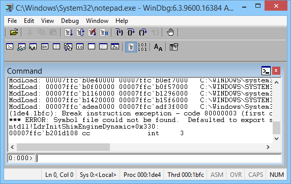

在软件开发和调试中，存在这无法使用开发IDE直接对代码进行调试的情况。必然在开发过程中看似没有遇到问题的应用程序，发布到UAT环境之后出现的新的异常。而UAT环境又要模拟生产环节，不运行安装开发IDE进行调试。在这种情况下就必须用其他的工具进行在线调试。在Windows环境中，WinDBG是一款非常优秀的调试工具。WinDBG可以适用于在线调试各种性能，异常问题，专治各种应用程序水土不服。
有一种情况是在应用程序刚刚启动的初始化阶段，问题就发生的。这种情况下，问题发生的时间点非常早。如果等进程启动好，再用WinDBG 附加到 问题进程，往往已经查不到问题的原因。这个POST，讨论一下如何在进程启动的最初阶段就开始加载WinDBG.
准备工具
要完成这个任务，需要在Windows上面安装下面工具：
WinDBG的安装包同时包含了Gflags和CDB, 安装好WinDBG后，在WinDBG的目录中就能找到。
用WinDBG来启动进程并在附加在进程上
说到在应用程序启动阶段step in，有一种方式，就是用WinDBG来直接直接启动应用程序。
- 启动WinDBG.
- 点 File -> Open Executable.
- 在弹出窗口，找到要启动应用程序的可执行文件(.EXE).点击OK.
- 操作完之后，WinDBG将会负责把应用程序启动起来，并且在第一个Debugging响应事件(0x80000003)触发的时候将程序暂停下来，可以开始Debugging.

进阶版-使用Gflag
上述操作可以满足一定程度的使用场景。但，如果是目标进程是一个Windows Service或者Web Service, 或者目标进程是high previlege, 上述方式就可能会失败。这种情况下，需要用gflag来进行曲线救援。
使用gflag来设定应用程序在启动的时候自动被停止。
在应用程序被停止的时候，可以使用gflag来启动一个debugger 进入到应用程序的runtime中。并且开启一个debugging session等待下一步的debugging指令。由于这个debugger只用于开启debugging session，并且等待并且执行指令，这里可以使用CDB这种轻量级的debugger.
一切就绪之后，就能够使用WinDBG 连到 debugging session中，通过CDB进行远程调试了。
- 打开 Gflags.
- 点击Image File, 输入应用程序的可执行文件名。这里以w3wp.exe为例。
- 按Tab来刷新界面。
- 勾选Debugger
- 输入命令行，在进程启动的时候加载CDB并且开启debugging session.
C:\Debuggers\cdb -server npipe:pipe=dbgw3wp 点 Apply.
启动应用程序。因为这里是w3wp.exe为例，访问网站的页面，Windows Process Activiation Service 就会自动w3wp.exe. CDB会自动介入并且开启debugging session.
- 打开WinDBG.
- 点 File -> Connect to Remote Session
- 输入下面命令行连入CDB开启的通道。
- 成功以后，WinDBG就可以进行debugging了。
Sonic Guo